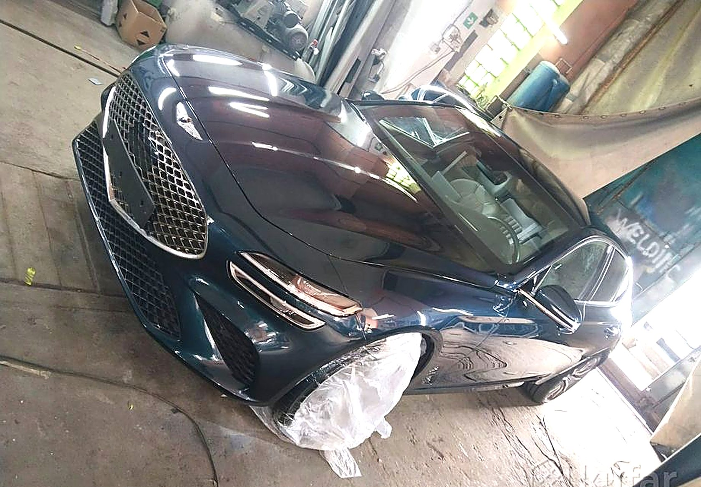
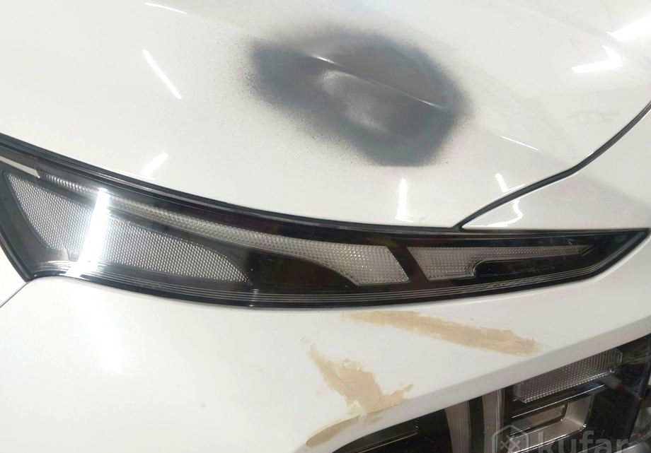
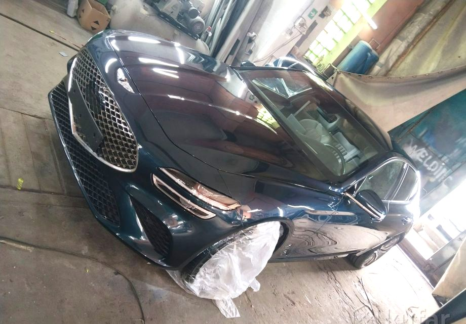

Металл варим, лак кладём сами
Кузовной ремонт и поэлементная покраска в Могилёве: сварка порогов, арок и лонжеронов, пайка бамперов, антикор, полировка и предпродажная подготовка. Работаем за наличный и безналичный расчёт.
Один цех: от гнилого порога до лака
Не отправляем кузов по трём адресам. Сварка, подготовка, покраска и полировка — на Ровчакова, 10.
Сварка кузова
Пороги, арки, поддомкратники, днище и лонжероны. Вырезаем гниль до металла, варим вставку по месту.
Покраска элементов
Бампер, крыло, дверь, капот, порог. Подбор цвета по коду, база и лак, полировка перехода.
Ремонт бампера
Пайка трещин и креплений, восстановление формы, покраска в цвет.
Антикор и днище
Пескоструйная очистка, антикоррозийная обработка, герметик по заводским швам, скрытые полости.
Геометрия кузова
Правка силовых элементов и проверка контрольных точек после сварки и удара.
Уход и подготовка
Химчистка салона, тонировка стёкол, полировка кузова и фар, предпродажная подготовка.
Две половины одной работы: шов и слой
Покраска держится не на краске, а на металле под ней. Поэтому сначала варим и выравниваем, только потом грунт и лак.

Сначала металл
Ржавчину вырезаем, а не закрашиваем: под шпаклёвкой гниль продолжается.
Потом геометрия
После сварки силовых элементов проверяем зазоры и диагонали.
Затем подготовка
Обезжиривание, грунт, шпаклёвка по правилам, а не «на глаз».
И только потом лак
База в цвет по коду, лак, сушка, полировка перехода.
Как это выглядит в цеху
Реальные кадры из мастерской: подготовка, маскировка, окрашенные панели.





Работаем с 48 марками
От городских хэтчей до микроавтобусов и грузовых до 3,5 тонн.
Audi, BMW, Cadillac, Chery, Chevrolet, Chrysler, Citroen, Daewoo, DAF, Dodge, Fiat, Ford
Geely, Great Wall, Honda, Hyundai, Infiniti, JAC, Jaguar, Jeep, Kia, LADA (ВАЗ), Land Rover, Lexus
Lifan, MAN, Mazda, Mercedes-Benz, MINI, Mitsubishi, Nissan, Opel, Peugeot, Porsche, Renault, Saab
Scania, SEAT, Skoda, SsangYong, Subaru, Suzuki, Toyota, Volkswagen, Volvo, Zeekr, ГАЗ, ЗАЗ
ТагАЗ, УАЗ
Как проходит ремонт
Без сюрпризов в счёте: сначала смотрим, потом называем сумму.
Осмотр
Смотрим кузов, простукиваем проблемные места, фотографируем.
Смета
Называем объём работ и стоимость до начала: что варим, что красим, что полируем.
Ремонт
Сварка и правка, затем подготовка и покраска. Держим в курсе на каждом этапе.
Выдача
Полировка перехода, сборка, проверка зазоров. Чек и гарантия на работы.
Коротко о главном
Если чего-то не хватает — спросите в мессенджере, ответим без анкеты.
Пришлите фото повреждения — назовём сумму
Позвоните или напишите в WhatsApp: по фотографиям часто уже видно, нужна сварка или можно обойтись покраской.